Risk graphs — Tuesday, November 17, 2026
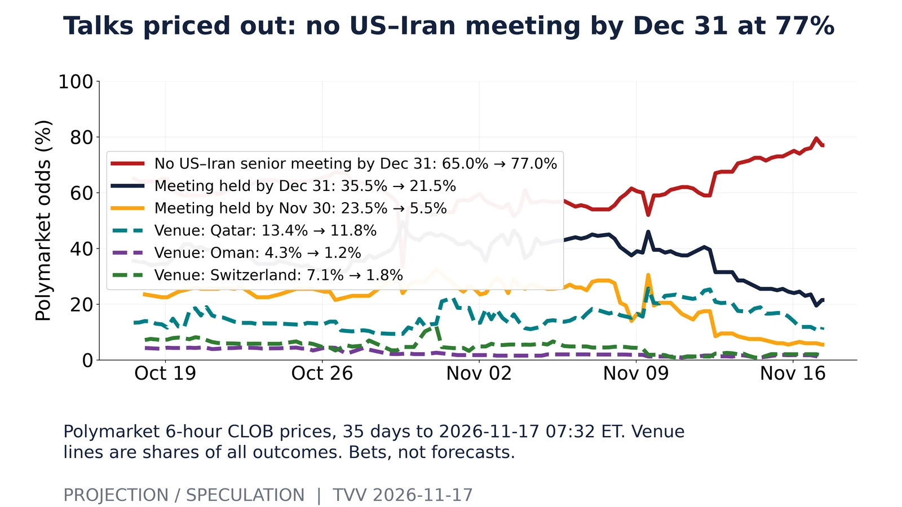
Talks priced out: no US–Iran meeting by Dec 31 at 77%. Polymarket 6-hour CLOB prices, 35 days to 2026-11-17 07:32 ET. Venue lines are shares of all outcomes. Bets, not forecasts.Source: https://polymarket.com/event/where-will-the-next-us-iran-senior-diplomatic-meeting-take-placeptptpt 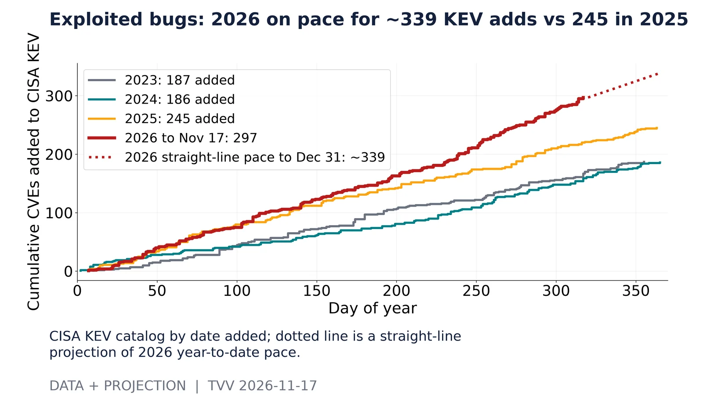
Exploited bugs: 2026 on pace for ~339 KEV adds vs 245 in 2025. CISA KEV catalog by date added; dotted line is a straight-line projection of 2026 year-to-date pace.Source: https://www.cisa.gov/known-exploited-vulnerabilities-catalog 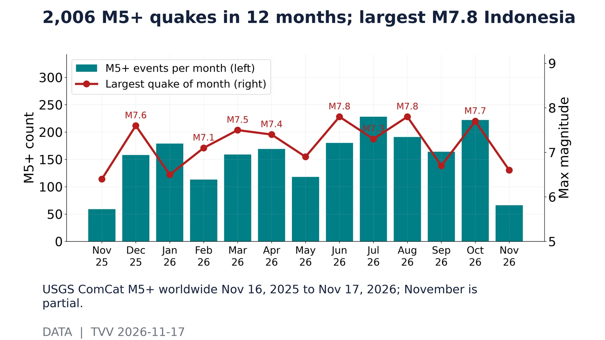
2,006 M5+ quakes in 12 months; largest M7.8 Indonesia. USGS ComCat M5+ worldwide Nov 16, 2025 to Nov 17, 2026; November is partial.Source: https://earthquake.usgs.gov/earthquakes/search/ 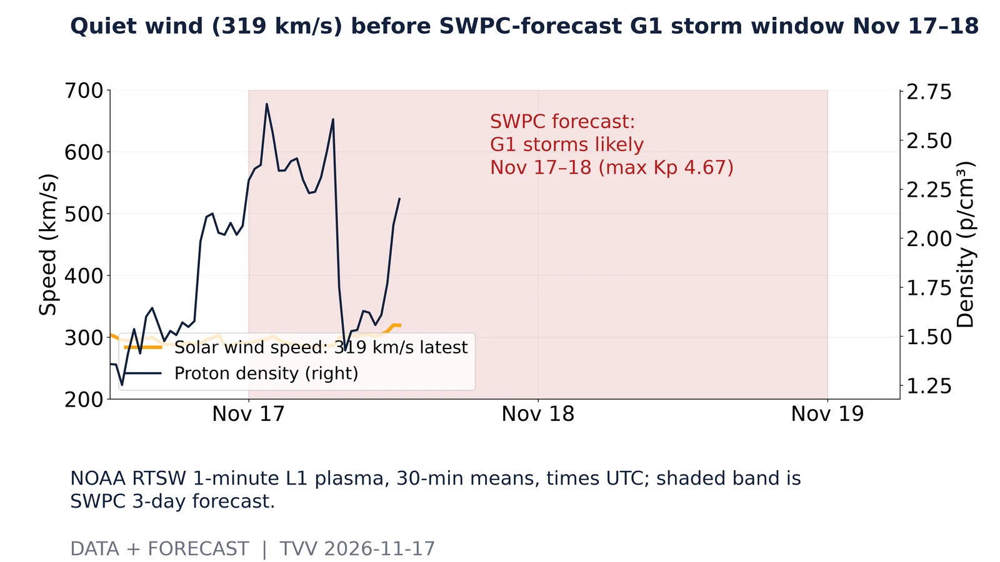
Quiet wind (319 km/s) before SWPC-forecast G1 storm window Nov 17–18. NOAA RTSW 1-minute L1 plasma, 30-min means, times UTC; shaded band is SWPC 3-day forecast.Source: https://www.swpc.noaa.gov/products/real-time-solar-wind 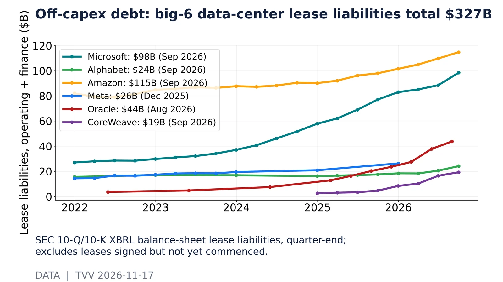
Off-capex debt: big-6 data-center lease liabilities total $327B. SEC 10-Q/10-K XBRL balance-sheet lease liabilities, quarter-end; excludes leases signed but not yet commenced.Source: https://www.sec.gov/search-filings/edgar-application-programming-interfaces 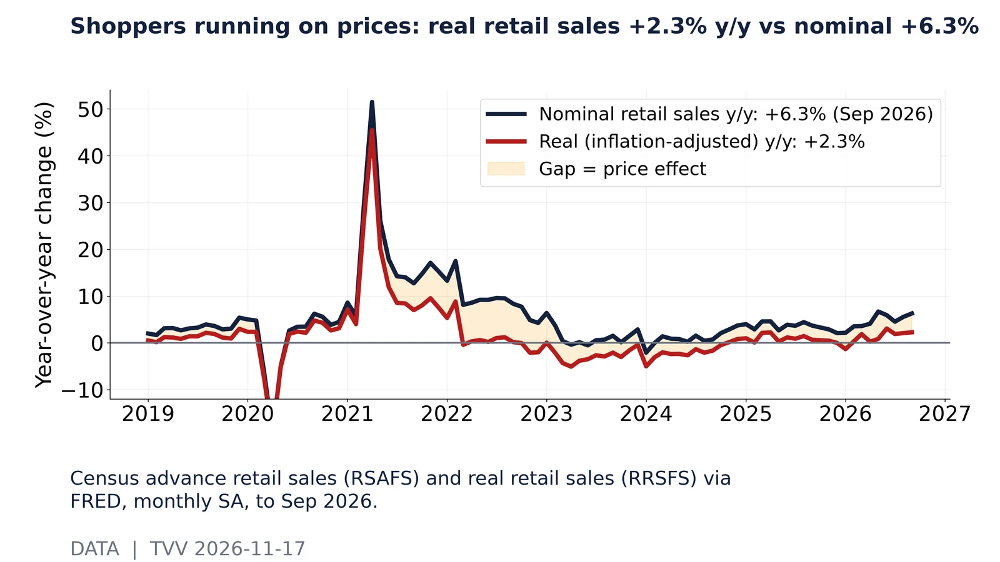
Shoppers running on prices: real retail sales +2.3% y/y vs nominal +6.3%. Census advance retail sales (RSAFS) and real retail sales (RRSFS) via FRED, monthly SA, to Sep 2026.Source: https://fred.stlouisfed.org/series/RRSFS 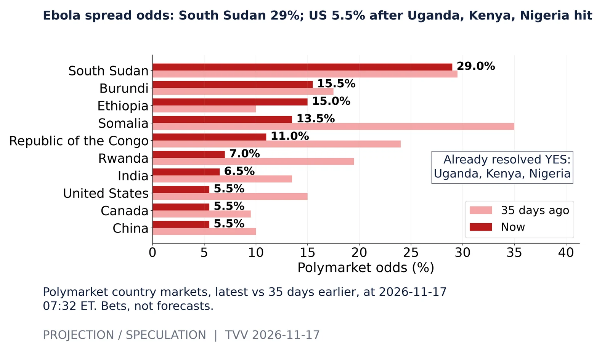
Ebola spread odds: South Sudan 29%; US 5.5% after Uganda, Kenya, Nigeria hit. Polymarket country markets, latest vs 35 days earlier, at 2026-11-17 07:32 ET. Bets, not forecasts.Source: https://polymarket.com/event/which-countries-will-have-an-ebola-case-in-2026 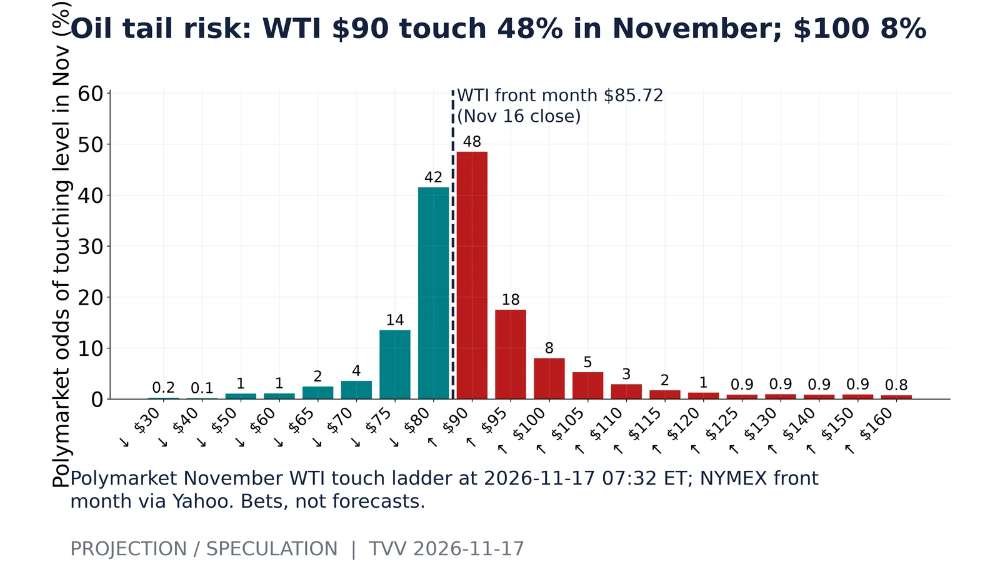
Oil tail risk: WTI $90 touch 48% in November; $100 8%. Polymarket November WTI touch ladder at 2026-11-17 07:32 ET; NYMEX front month via Yahoo. Bets, not forecasts.Source: https://polymarket.com/event/what-price-will-wti-hit-in-november-2026 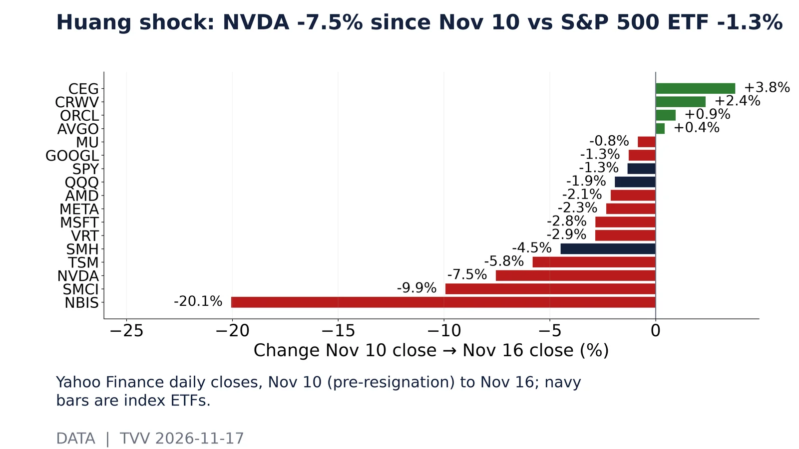
Huang shock: NVDA -7.5% since Nov 10 vs S&P 500 ETF -1.3%. Yahoo Finance daily closes, Nov 10 (pre-resignation) to Nov 16; navy bars are index ETFs.Source: https://query1.finance.yahoo.com/v8/finance/chart/NVDA?range=2y&interval=1d 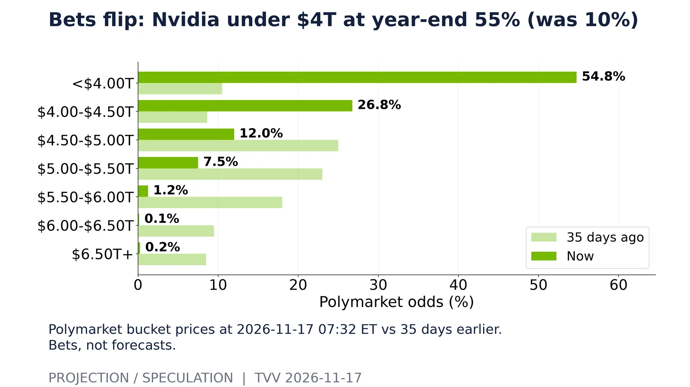
Bets flip: Nvidia under $4T at year-end 55% (was 10%). Polymarket bucket prices at 2026-11-17 07:32 ET vs 35 days earlier. Bets, not forecasts.Source: https://polymarket.com/event/nvidias-market-cap-end-of-2026 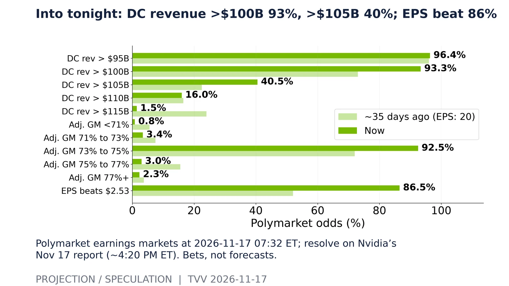
Into tonight: DC revenue >$100B 93%, >$105B 40%; EPS beat 86%. Polymarket earnings markets at 2026-11-17 07:32 ET; resolve on Nvidia’s Nov 17 report (~4:20 PM ET). Bets, not forecasts.Source: https://polymarket.com/event/will-nvidia-nvda-q3-data-center-revenue-be-above-20261008120135000 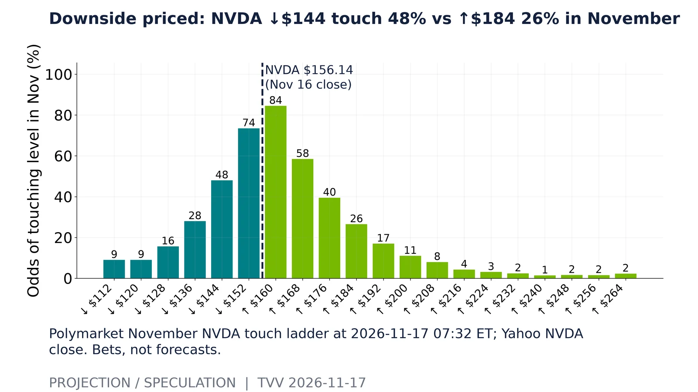
Downside priced: NVDA ↓$144 touch 48% vs ↑$184 26% in November. Polymarket November NVDA touch ladder at 2026-11-17 07:32 ET; Yahoo NVDA close. Bets, not forecasts.Source: https://polymarket.com/event/what-price-will-nvda-hit-in-november-2026 Anthropic IPO marked down: $1.25–1.50T valuation now 50% (was 8%). Polymarket IPO valuation and proceeds buckets at 2026-11-17 07:32 ET vs 35 days earlier. Bets, not forecasts.Source: https://polymarket.com/event/what-will-anthropics-ipo-valuation-be 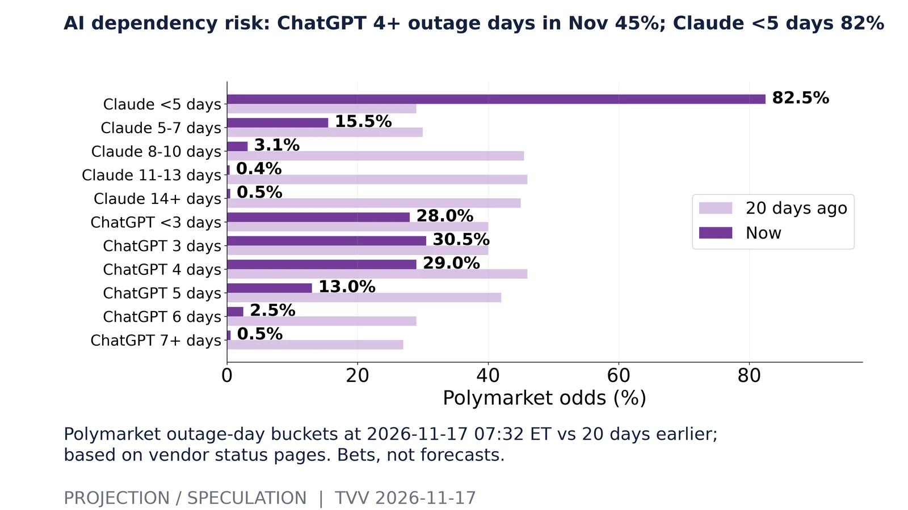
AI dependency risk: ChatGPT 4+ outage days in Nov 45%; Claude <5 days 82%. Polymarket outage-day buckets at 2026-11-17 07:32 ET vs 20 days earlier; based on vendor status pages. Bets, not forecasts.Source: https://polymarket.com/event/will-claude-go-down-on-days-in-november-2026 AI-exposed jobs lag: computer systems design -5.2% since Nov 2022 vs payrolls +3.3%. BLS CES via FRED, SA thousands, indexed to Nov 2022, monthly to Oct 2026.Source: https://fred.stlouisfed.org/series/CES6054150001 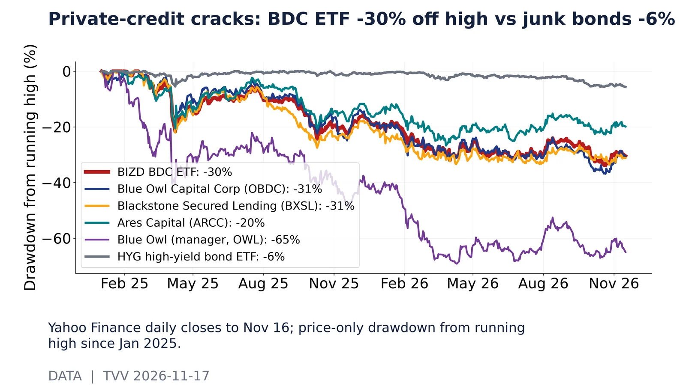
Private-credit cracks: BDC ETF -30% off high vs junk bonds -6%. Yahoo Finance daily closes to Nov 16; price-only drawdown from running high since Jan 2025.Source: https://finance.yahoo.com/quote/BIZD/